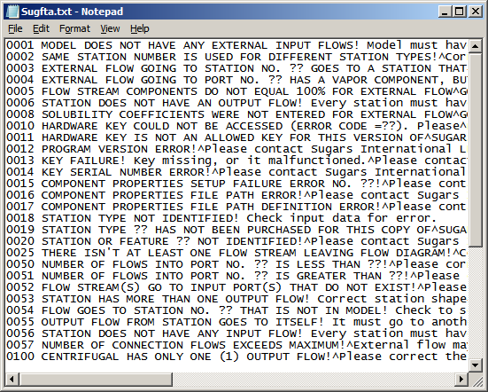
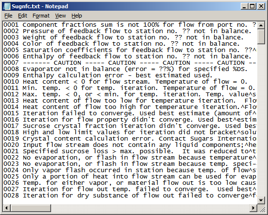

Error messages are given by Sugars if errors are detected during execution. Some of these messages are for information about the flow diagram it is analyzing, or calculations that it has done. Other messages are fatal to the evaluation by Sugars; e.g., missing connections, missing data, an improper flow diagram, etc. Error message files are used to store the text messages for errors that are detected during the input checking, and balance calculations. These files are stored as separate text files in the directory where Sugars is installed.
The four files named Sugfta.txt, Sugnfa.txt, Sugftb.txt and Sugnfb.txt are used during checking of the connections between stations and the input data for each station. The Sugfta.txt (shown below), Sugftb.txt and Sugftc.txt files contains messages that are fatal to the evaluation; i.e., they contain error message text for errors found while checking the flow diagram connections and/or input data values for each station. The Sugnfa.txt, Sugnfb.txt and Sugnfc.txt files contain error message text for warnings and/or comments about the model that are not fatal. Non-fatal errors will not stop the balance calculations, while fatal errors stop the calculations.

The remaining two files named Sugnfc.txt (shown below) and Sugftc.txt are used during the balance calculations. The Sugnfc.txt file contains messages that are not fatal to the balance calculations; e.g., incorrect temperature values, incorrect input data, etc. Messages in the Sugftc.txt file are for fatal errors that prevent Sugars from doing the balance calculations.

Each error message in the error message files has a number for the message and text that goes with the error number. The text is on one line for each message. The text in these files can be translated into different languages and/or revised if necessary.